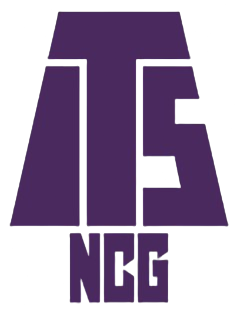
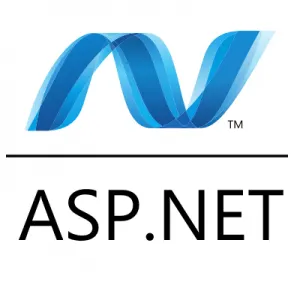
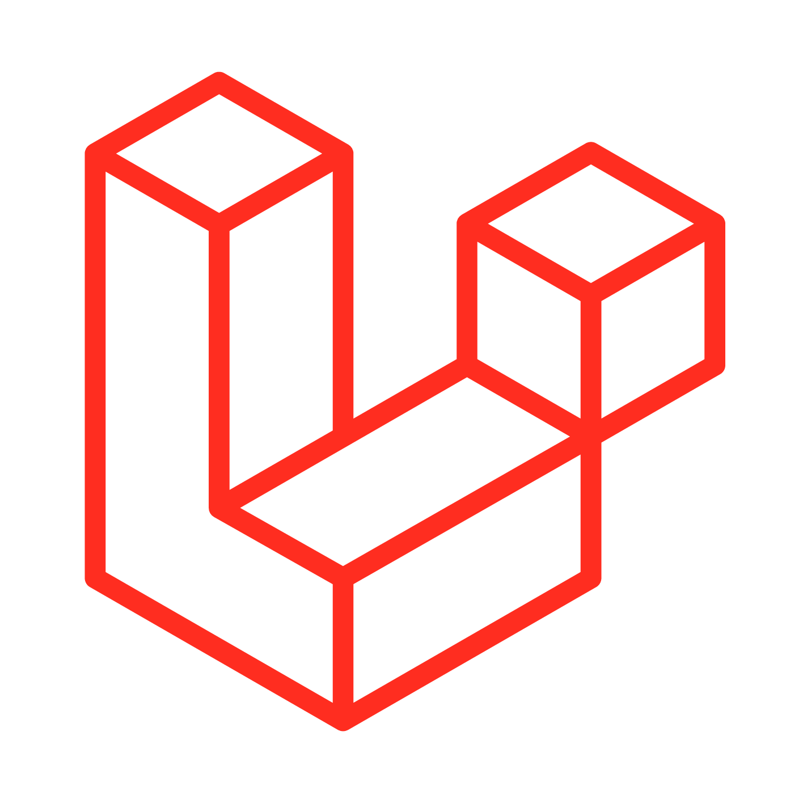
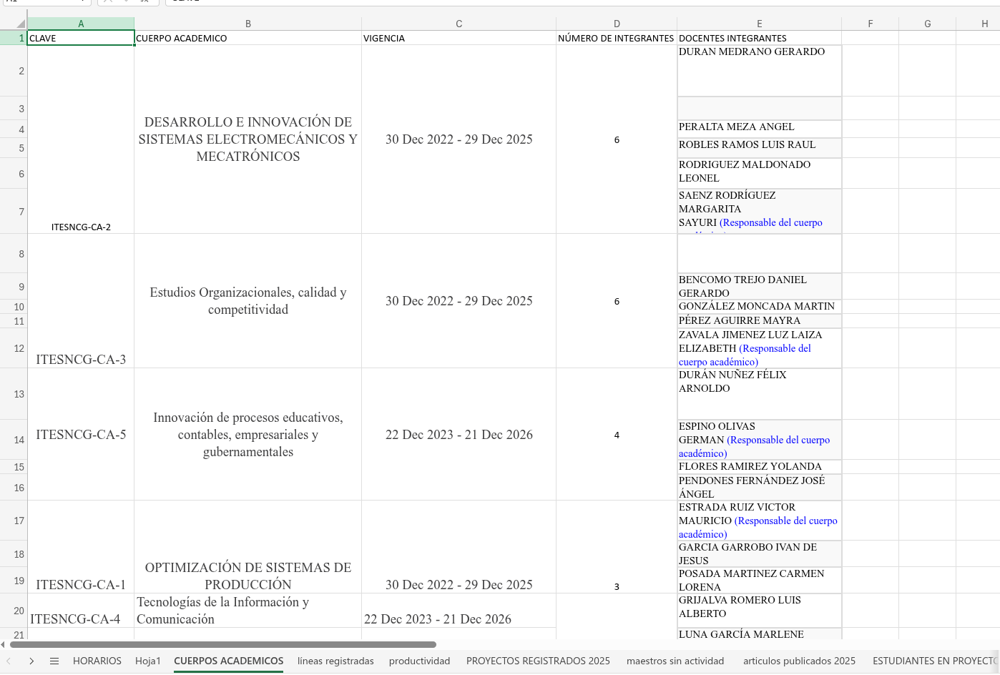
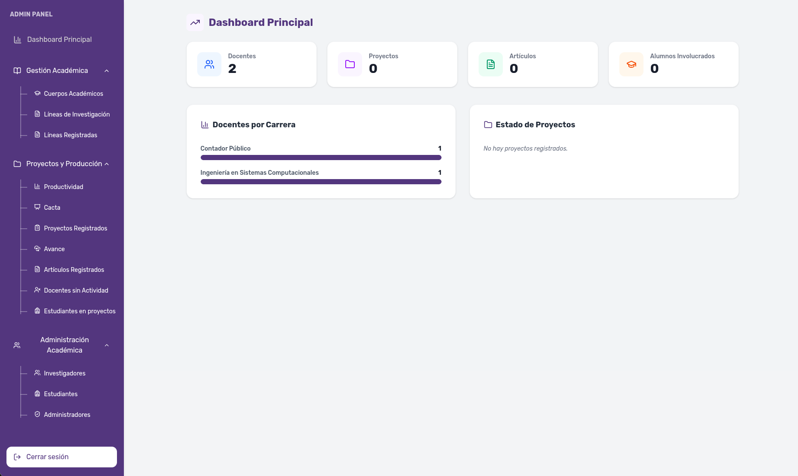

SISTEMA DE REGISTROS DE DOCENTES INVESTIGADORES Y PROYECTOS
Instituto Tecnológico Superior de Nuevo Casas Grandes

Marco Contextual.
Entorno institucional y geográfico del desarrollo del proyecto.
Ubicación
Nuevo Casas Grandes, Chihuahua (Región Noroeste).
Institución
Instituto Tecnológico Superior de Nuevo Casas Grandes (ITS NCG).
Propósito Institucional
Oferta de carreras profesionales fomentando la investigación e innovación tecnológica.
Planteamiento del Problema.
Análisis detallado de las deficiencias en la gestión de investigación institucional.
Sin Sistema Digital
La gestión de investigaciones no tiene una plataforma propia; todo se administra de forma manual en archivos de Excel.
Información Dispersa
Se batalla mucho para encontrar cualquier información, ya sea de los proyectos activos o de los mismos docentes.
Control de Avances
Es muy difícil dar seguimiento a los avances, lo que provoca posibles errores en los datos y retrasos en la supervisión.
Uso de OneDrive
Los docentes no tienen un canal formal; suben todo por OneDrive, lo que vuelve el seguimiento un proceso muy desordenado.
¿Cómo mejorar la administración y seguimiento de los proyectos de investigación?
Antecedentes.
Análisis de proyectos previos que utilizaron tecnología para mejorar la gestión en universidades.
Instituto Tecnológico Superior de Acapulco
Castañeda, Mata, & Bravo (2021)
Sistema SIWSS
Abordó la problemática de la falta de control y seguimiento en el servicio social. La transición de una gestión tradicional a la plataforma digital SIWSS permitió administrar los procesos académicos de manera estructurada, facilitando la supervisión administrativa y el monitoreo de avances.
- Mejor control y seguimiento del servicio social.
- Información académica más organizada.
- Procesos administrativos más ágiles.
Universidades Tecnológicas Hidalguenses
Escorza-Sánchez, et al. (2024)
Gestión Estratégica
Se desarrolló una plataforma web para conectar los recursos de la universidad con sus objetivos estratégicos. El sistema centraliza la planeación operativa, asegurando que cada recurso se utilice eficazmente para alcanzar las metas institucionales de forma organizada.
- Mayor seguridad en el manejo de la información.
- Mejor organización de la planeación operativa.
- Facilidad para alcanzar las metas institucionales.
Objetivos.
Definición del propósito central y las metas operativas para el desarrollo del sistema.
Objetivo General
Desarrollar un sitio web para la gestión de proyectos de investigación, con el fin de organizar, dar seguimiento y administrar la información de manera eficiente y estructurada.
Analizar Procesos
Identificar necesidades y áreas de mejora en los métodos actuales de gestión de proyectos.
Diseñar Estructura
Planificar la arquitectura del sistema para facilitar el registro y la consulta de información técnica.
Implementar BD
Crear una base de datos segura en MySQL para el control ordenado de toda la información académica.
Desarrollar Módulos
Construir herramientas de registro y edición para optimizar el seguimiento de cada investigación.
Visualización Pública
Mostrar de forma accesible y estructurada la información de los docentes y sus proyectos.
Evaluar Sistema
Verificar el cumplimiento de requerimientos mediante pruebas de uso y validación con el encargado.
Justificación.
Por qué es fundamental la transición de métodos manuales a un sistema centralizado y digital.


Coordinación
Facilita el registro, control y consulta inmediata de información académica.
Docentes
Brinda un espacio organizado para la gestión y visibilidad de sus investigaciones.
Instituciones
Fomenta colaboraciones externas mediante la exposición pública de trabajos.
Marco teórico.
Sistemas de Info.
Proyectos
Investigación
Frameworks de Desarrollo
Implementación de una arquitectura robusta y escalable utilizando Laravel para el backend y React para el frontend.
Cliente-Servidor
Diseño UI
Bases de Datos
PHP & TS
Sistemas Web
Bosquejo del método.
Enfoque estructurado para el diagnóstico, diseño y evaluación del sistema.
Fundamentación Técnica
Enfoque Cuantitativo: Diagnóstico y análisis de datos numéricos mediante encuestas a docentes investigadores.
Variables de Estudio
Independiente:
- Uso del sistema web
Dependientes:
- Tiempo de gestión
- Organización de datos
- Satisfacción de usuario
Representatividad basada en el universo de 29 docentes.
Presupuesto.
Evaluación técnica y económica para la viabilidad del proyecto.

* Incluye capacitación, integración de base de datos y fase de pruebas con usuarios finales.
Referencias.
Fuentes académicas y técnicas consultadas para el desarrollo del estudio.